Pequim
O coração histórico da China reúne palácios imperiais, templos milenares e avenidas monumentais. Em Pequim, cada passo revela séculos de tradição ao lado da grandiosidade da China moderna.
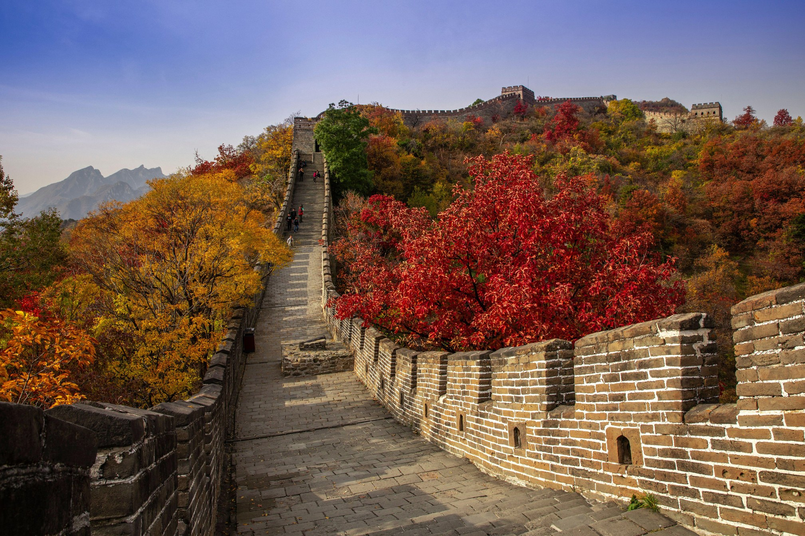
Um roteiro por Pequim, Xi'an, Chengdu, Chongqing, Zhangjiajie, Xangai e Suzhou.
Registros de experiências da Lefer Viagens na China.
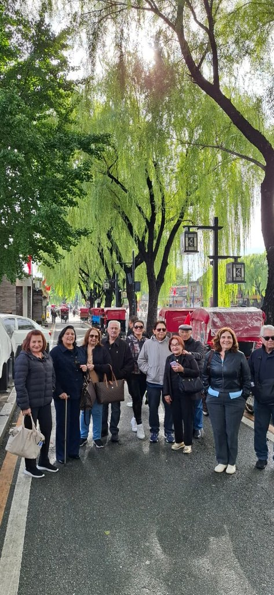
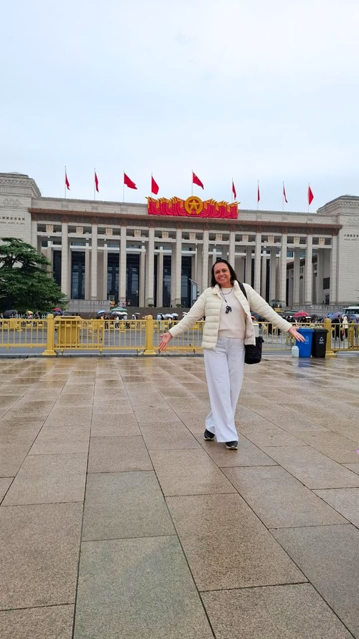
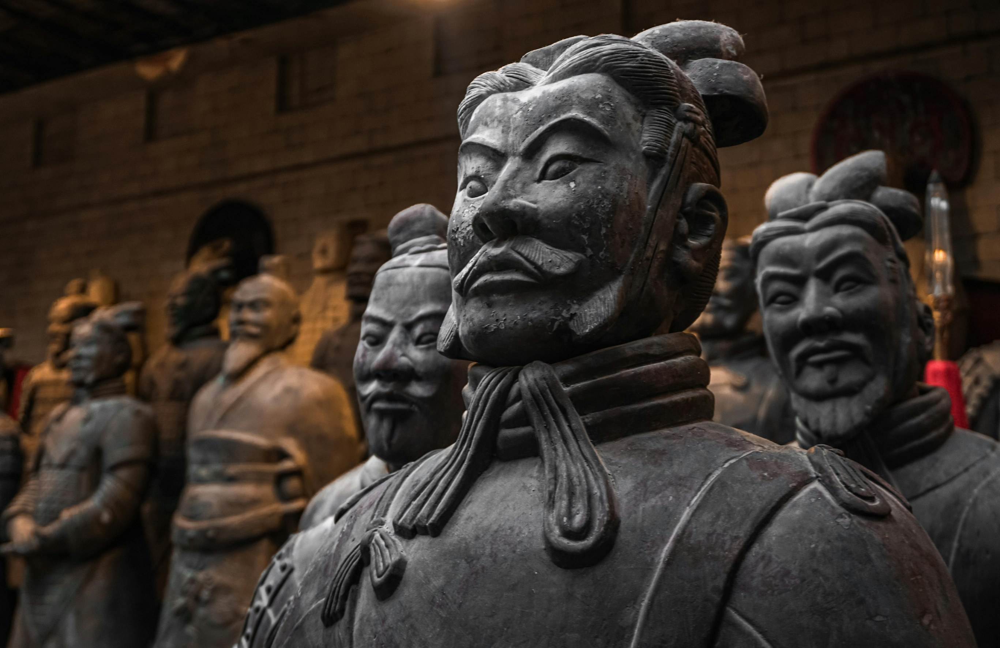
O coração histórico da China reúne palácios imperiais, templos milenares e avenidas monumentais. Em Pequim, cada passo revela séculos de tradição ao lado da grandiosidade da China moderna.
Berço da antiga Rota da Seda, Xi'an impressiona por seu legado histórico. Muralhas preservadas, bairros tradicionais e o famoso Exército de Terracota fazem da cidade uma verdadeira viagem no tempo.
Muito além dos adoráveis pandas-gigantes, Chengdu conquista pelo ritmo tranquilo, templos históricos e gastronomia marcante. Um destino onde tradição, natureza e cultura convivem em perfeita harmonia.
Conhecida como a cidade das montanhas, Chongqing encanta com seu cenário urbano impressionante, rios grandiosos e uma atmosfera vibrante. Um destino que revela a China mais autêntica e surpreendente.
Paisagens que parecem saídas de um filme. Os imensos pilares de pedra envoltos por névoa criam um dos cenários naturais mais espetaculares do mundo, repleto de trilhas e vistas inesquecíveis.
Cosmopolita e fascinante, Xangai reúne arranha-céus futuristas, bairros históricos e uma energia contagiante. Um destino onde o passado e o futuro caminham lado a lado.
Conhecida como a “Veneza do Oriente”, Suzhou encanta com seus canais, jardins clássicos e pontes de pedra. Um refúgio de beleza, elegância e tradição no coração da China.
Imagens que antecipam alguns dos cenários, culturas e experiências desta jornada.
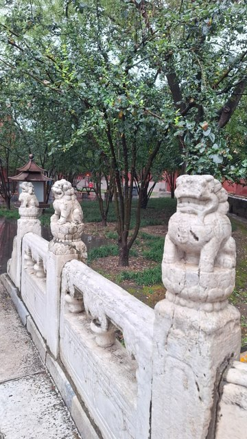
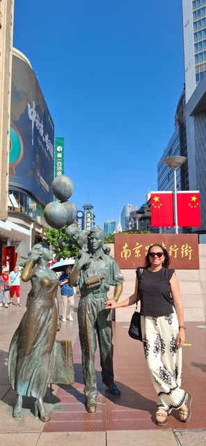
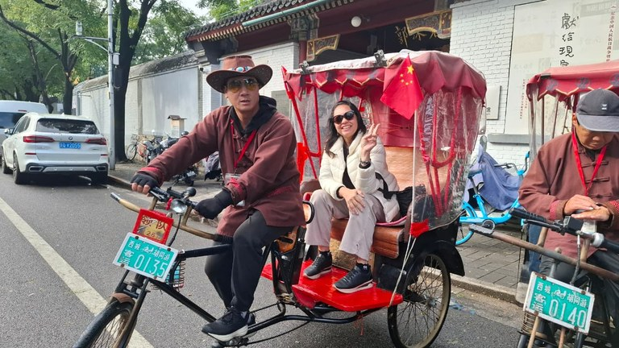
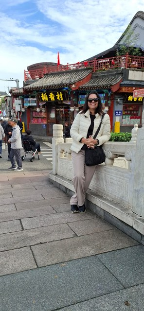
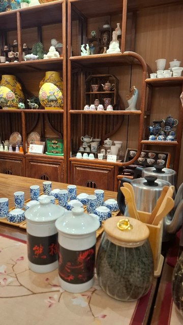
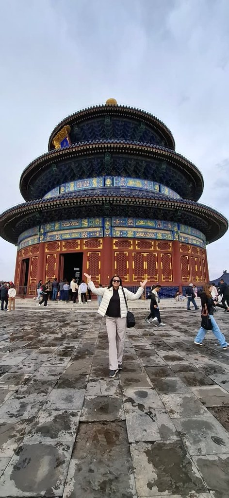
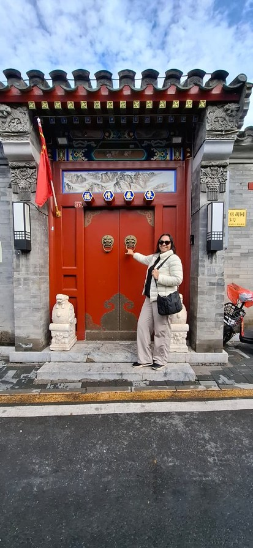
31 de outubro a 16 de novembro de 2027 · 16 noites
Chegada, recepção no aeroporto e traslado ao hotel. Voo a confirmar.
Praça Tiananmen, Cidade Proibida, hutongs e Templo do Céu. Almoço e jantar de pato laqueado incluídos; bebidas do jantar à parte.
Mutianyu com teleférico e vistas externas do Parque Olímpico. Almoço incluído.
Trem-bala e traslado ao hotel. Jantar-show da Dinastia Tang opcional.
Guerreiros de Terracota, Pagode do Grande Ganso Selvagem (vista panorâmica) e Bairro Muçulmano. Almoço livre.
Viagem de trem-bala e traslado ao hotel.
Centro de Criação de Pandas-Gigantes e passeio de barco para observar o Grande Buda de Leshan. Almoço incluído.
Trem-bala, complexo Hongya e teleférico noturno sobre o Yangtzé. Almoço incluído.
Estação Liziba, Ciqikou, Jiefangbei e Observatório Olho de Nuvem. Almoço incluído.
Trem-bala e encontro com guia de língua espanhola.
Parque Nacional, Elevador Bailong, Yuanjiajie e Montanha Tianzi. Almoço incluído.
Teleférico e caminho de vidro. Almoço fast food incluído. Ponte de Vidro do Grande Cânion a confirmar.
Voo interno e traslado ao hotel.
Jardim e Mercado Yuyuan, Templo do Buda de Jade e Bund. Almoço incluído.
Passeio de ida e volta desde Xangai: Jardim dos Pescadores, Colina do Tigre e Rua Pingjiang. Almoço incluído.
Torre de Xangai, 1000 Trees (panorâmica), Xintiandi e Nanjing Road. Almoço incluído.
Traslado ao Aeroporto de Pudong; voo a confirmar.
Consulte o PDF enviado pela Patrícia com as informações originais do pacote China no Outono 2027.
O botão abre o WhatsApp já identificando o pacote China no Outono 2027.